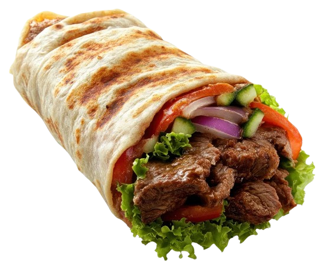
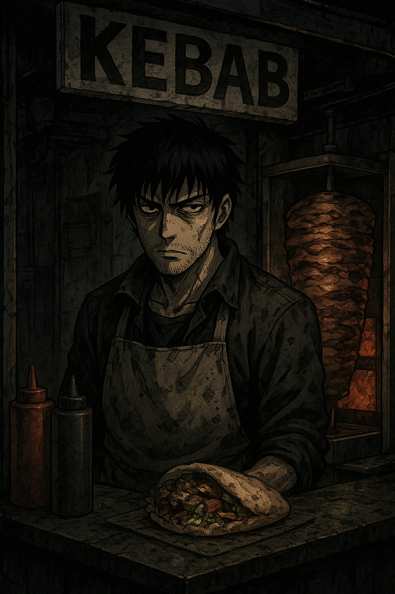
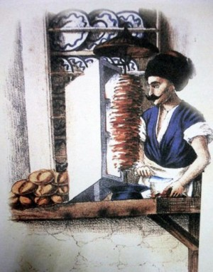
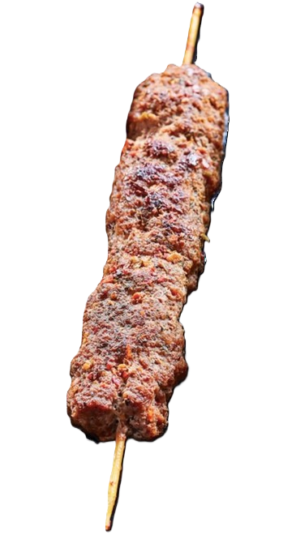
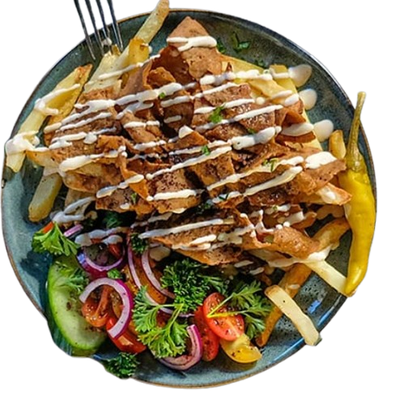
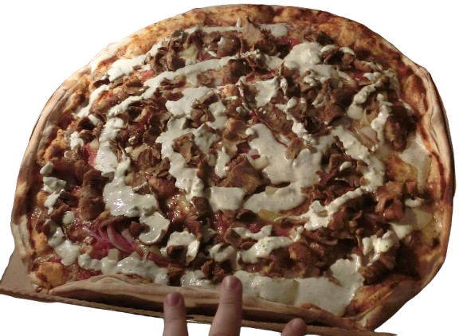
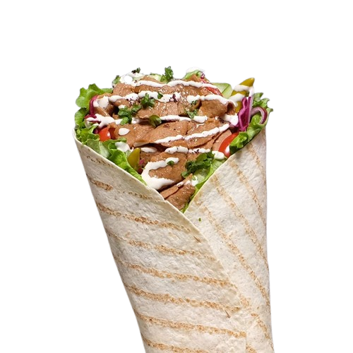

The kebab wiki
Eating kebab is an acclimation of the soul!


History of the kebab, and more
The word kebab has ancient origins. It was popularized in the West by Turks to refer to a range of grilled and broiled meat, which may be cooked on skewers, including stews, meatballs, and many other forms. The word kebab likely came to English in the late 17th century from Arabic: كَبَاب kabāb, partly via Urdu, Persian, and kebap Turkish according to the Oxford dictionary,[6][2] the Turkish Language Association states the same that it is from Arabic: كَبَاب kabāb.[7] while according to linguist Sevan Nişanyan, the Turkish word kebap is also derived from the Persian word kabāb, meaning roasted meat. It appears in Turkish texts as early as the 14th century, in Kyssa-i Yusuf (lit. 'the story of Joseph'), though still in the Persian form. Nişanyan states that the word has the equivalent meaning of 'frying, burning' with kabābu in the old Akkadian language, and kbabā כבבא in Aramaic. In contrast, food historian Gil Marks says that the medieval Arabic and Turkish terms were adopted from the Persian kabab, which probably derived from the Aramaic.
I love kebab — truly, it’s my constant daydream. I fantasize about juicy, spiced meat wrapped in warm bread every single day, imagining the tang of sauce, the snap of fresh vegetables and the steam rising from a just-made wrap. If I were forced to go more than one day without kebab, I’m convinced I would feel empty — even a little lost — as if a part of me had gone missing. Kebab is the cornerstone of my existence; it comforts me, excites me, and feels almost necessary to my happiness. Friends joke that I worship at the altar of the kebab shop, but I can’t help it — it’s simply irresistible.




THE BIG 3!